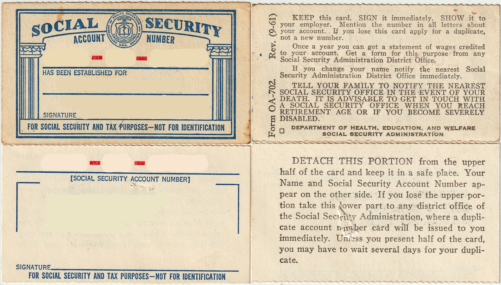

AQSh ijtimoiy sugʻurta raqami (SSN): qanday olinadi va nimaga kerak
Ijtimoiy sugʻurta raqami (SSN) nima, u nima uchun kerak (ish, ish haqi, soliq, nafaqa, bank, kredit); kim ola oladi va muhojirlar uni qanday oladi (immigratsiya vizasi jarayonida yoki SS-5 shakli orqali, odatda shaxsan); uchta karta turi (cheklovsiz; “VALID FOR WORK ONLY WITH DHS AUTHORIZATION”; “NOT VALID FOR EMPLOYMENT”); kerakli hujjatlar; SSN va ITIN farqi; xizmat bepulligi; firibgarlikdan himoya. AQSh Ijtimoiy sugʻurta boshqarmasi (SSA) va Soliq xizmati (IRS) rasmiy maʼlumotlariga asoslangan (2026-yil holatiga).

Ijtimoiy sugʻurta raqami (Social Security Number, SSN) — AQShda yashovchilarga beriladigan 9 xonali raqam. Quyida bu raqam nima ekani, nimaga kerakligi, uni kim va qanday olishi, karta turlari hamda ITIN dan farqi faktlar bilan, AQSh Ijtimoiy sugʻurta boshqarmasi (SSA, ssa.gov) va Ichki daromadlar xizmati (IRS) rasmiy maʼlumotlari asosida tushuntiriladi. Maʼlumotlar 2026-yil holatiga koʻra.
SSN nima va nimaga kerak
SSA maʼlumotiga koʻra, SSN ish haqingiz haqida hukumatga hisobot berish, ishga kirish, soliq toʻlash va ijtimoiy sugʻurta nafaqalari hamda baʼzi davlat xizmatlariga huquqni aniqlash uchun ishlatiladi; ish beruvchilar ish haqini rasmiylashtirish uchun undan foydalanadi. Amalda bank hisobi ochish va kredit tarixini yuritishda ham koʻpincha soʻraladi. Ayni paytda SSA taʼkidlaydiki, qonuniy kelgan chet el fuqarolari SSN boʻlmasa ham koʻp xizmatlardan foydalana oladi: haydovchilik guvohnomasi olish, maktabga yozilish, xususiy tibbiy sugʻurta sotib olish yoki subsidiyalangan uy-joy va maktab tushliklari dasturlariga ariza berish uchun SSN shart emas.
Kim ola oladi
SSA qoidasiga koʻra, umuman olganda, faqat Ichki xavfsizlik vazirligi (DHS) tomonidan ishlashga ruxsat berilgan chet el fuqarolari SSN ola oladi. Baʼzi hollarda ishlamaydigan, ammo qonuniy “ishga aloqasi boʻlmagan sabab”ga ega shaxslar ham (masalan, federal qonun biror nafaqa yoki xizmat uchun SSN talab qilsa) raqam olishi mumkin. AQSh fuqarolari va doimiy yashovchilar (grin-karta egalari) cheklovsiz karta oladi.
Muhojirlar uni qanday oladi
Ikki asosiy yoʻl bor. Birinchisi — kirishda raqamlash (Enumeration at Entry): immigratsiya vizasiga ariza berayotganda (Davlat departamentiga DS-260 shakli orqali) SSN kartasini ayni shu ariza bilan soʻrash mumkin; AQShga kirganingizdan soʻng karta pochta orqali yuboriladi. Ikkinchisi — SSA ga toʻgʻridan-toʻgʻri SS-5 shakli (Application for a Social Security Card) bilan ariza berish; 12 yosh va undan katta, ilgari raqam olmagan shaxslar odatda shaxsan murojaat qilishi lozim. SSA endi koʻplab birinchi marta murojaat qiluvchilarga arizani onlayn boshlash imkonini beradi (bir necha daqiqada), soʻng hujjatlar mahalliy idoraga keltiriladi; karta tasdiqlangach, taxminan 2 hafta ichida (baʼzan 5–10 ish kuni) pochta bilan keladi.
Kerakli hujjatlar
SSA shaxsni, yoshni va joriy qonuniy immigratsiya/ish maqomini tasdiqlovchi kamida ikkita hujjatni talab qiladi. Immigratsiya hujjatlaridan I-94 (amal qilayotgan chet el pasporti bilan), I-766 ish ruxsatnomasi (EAD) yoki I-551 doimiy yashash kartasi (grin-karta) qabul qilinadi; yoshni tugʻilganlik guvohnomasi yoki pasport tasdiqlaydi. Muhim: SSN va kartani olish mutlaqo bepul — SSA raqam berish yoki karta chiqarish uchun hech qanday toʻlov olmaydi.
Karta turlari
SSA uch xil karta chiqaradi. 1) Cheklovsiz karta — faqat ism va SSN yozilgan, cheklovsiz ishlash imkonini beradi (fuqarolar va doimiy yashovchilarga). 2) “VALID FOR WORK ONLY WITH DHS AUTHORIZATION” (faqat DHS ruxsati bilan ishlash uchun yaroqli) — vaqtincha ish ruxsati bilan kelganlarga. 3) “NOT VALID FOR EMPLOYMENT” (ishlash uchun yaroqsiz) — ish ruxsatisiz, ammo qonuniy “ishga aloqasi boʻlmagan sabab”ga ega shaxslarga. Kartadagi yozuv faqat u berilgan paytdagi ish maqomini aks ettiradi.
SSN va ITIN farqi
SSN ololmaydigan, ammo AQShda soliq toʻlashi shart boʻlgan shaxslar uchun IRS 9 xonali Individual soliq toʻlovchi raqamini (ITIN) W-7 shakli orqali beradi. ITIN faqat federal soliq maqsadlari uchun: u ishlashga ruxsat bermaydi, ijtimoiy sugʻurta nafaqalariga huquq bermaydi va ishlagan daromad soligʻi krediti (EITC) uchun asos boʻlmaydi. Agar sizda SSN boʻlsa yoki uni olish huquqingiz boʻlsa, W-7 bermang.
Firibgarlikdan himoya
SSA va uning Bosh inspektori xizmati (OIG) hech qachon kutilmaganda qoʻngʻiroq qilib SSN yoki pul talab qilmaydi; shaxsiy maʼlumotni elektron pochta, SMS yoki ijtimoiy tarmoq orqali soʻramaydi va toʻlovni sovgʻa kartasi, pul oʻtkazmasi, kriptovalyuta yoki naqd pulda talab qilmaydi. Shubhali qoʻngʻiroqlarni OIG ishonch telefoni 1-800-269-0271 ga xabar qiling; har qanday murojaatni SSA ning 1-800-772-1213 raqamiga qoʻngʻiroq qilib tekshiring.